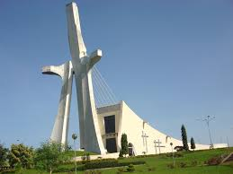
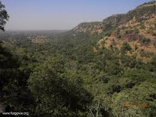
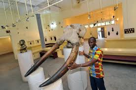

Abiyan
Abiyán es la principal ciudad y capital de Costa de Marfil, es a su vez el centro comercial y financiero más importante del país, también es la capital del departamento homónimo.

Andrea: La ciudad es sede de varios museos. Y entre los lugares mas destacados se encuentran la catedral de San Pablo, el Museo Municipal de Arte Contemporáneo de Cocody y la Reserva Forestal del Parque du Banco. Otros sitios de interés son: El barrio de Le Plateau, centro de negocios de Abiyán, el cual es conocido por sus rascacielos, hecho inusual en África Occidental.
La Catedral de San Pablo de Abiyán Es una catedral católica ubicada en la ciudad de Abiyán, Costa de Marfil. La catedral, que fue diseñada por el arquitecto Aldo Spirito, sirve como iglesia madre de la arquidiócesis de Abiyán
El Museo Municipal de Arte Contemporáneo, que pertenece al ayuntamiento de Cocody, abrió sus puertas en 1993. El fondo del museo cuenta aproximadamente con unos cien cuartos de los que sólo la mitad están expuestos, por falta de espacio suficiente. Cuadros, cerámicas, tapices, fotografías y otros, firmados por algunos de los artistas más cotizados de Costa de Marfi
El Parque nacional del Banco es un área protegida con el estatus de parque nacional en el país africano de Costa de Marfil se encuentra por la carretera del Norte en el distrito de Attécoubé.
El Jardín Botánico es un parque bastante grande con una zona de picnic. Es tranquilo y relajante, con una buena selección de especies genial para un picnic, tiene una zona es atendida con mesas y sillas, pero puede traer su propio. No está muy lleno.
El Museo de las Civilizaciones de Costa de Marfil, es una institución dependiente del Ministro de Cultura y Relaciones con Francia (?). Construido en 1942 sobre una superficie de 2 hectáreas, el Museo de las Civilizaciones de Costa de Marfil dispone de unos fondos museográficos que constan de aproximadamente un millón y medio de piezas provenientes de todas las provincias del país.
